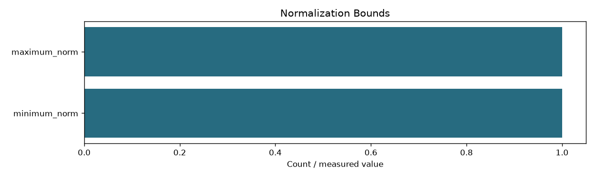
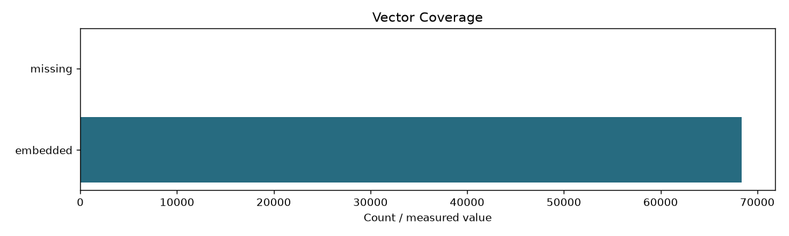

| fingerprint | a0eefc420f8daceae3ffe4ce2d69fc10aa3e5d524c92630978f19d7ae1c3b592 |
|---|---|
| input_fingerprint | 71668d940cb276669256315dcfd18c9f2536f5d3b8c3044b085a1a50be45531c |
| documents | 68414 |
| passages | 68414 |
| dimension | 1024 |
| dtype | float16 |
| model_revision | 97b0c614be4d77ee51c0cef4e5f07c00f9eb65b3 |
| all_vectors_finite | True |
| norm_min | 0.9997560381889343 |
| norm_max | 1.000244140625 |
| vector_bytes | 140112000 |
| last_session_seconds | 67.16 |
| last_session_rows | 68414 |
| device | cuda |
| final_batch_size | 512 |
| max_batch_tokens | 100000 |
| peak_cuda_allocated_bytes | 3228066304 |

